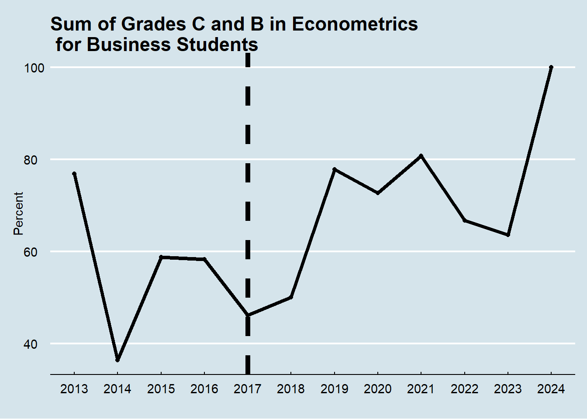
My Teaching Philosophy
Evolving Education in Econometrics and Data Science
About Myself and My Educational Journey
My name is Øystein Myrland, from Andenes in Nordland. I am a professor (since 2007) of Economics at The School of Business and Economics. My long-term relationship with UiT The Arctic University of Norway dates back to my enrollment as a student back in 1986. During my studies, I was introduced to teaching during study groups, where I often ended up lecturing my fellow students during sessions—a role I found both stimulating and very engaging. This early experience sparked my passion for teaching, a commitment that has only deepened over the years. As you will notice, most of this document is written in English. The reason for this is that the majority of my current and historical classes, mainly at the master’s and PhD level, have been taught in English, largely because they are part of the Erasmus program—a European Union initiative to support education, training, and international exchange. Additionally, all my research is conducted and published in English. Only recently have I begun teaching in Norwegian at the bachelor’s level, marking an interesting shift in my teaching journey, transitioning from teaching advanced topics to guiding students through foundational concepts.
I began my formal teaching career during my PhD project in 1996, with a strong emphasis on quantitative courses. Early in my career, I taught econometrics and market analysis courses using proprietary software like Shazam (Byron 1987), SPSS (Hilbe 2003, 2004, 2005), and Stata (Gutierrez 2010) for the traditionally required empirical “data labs” (Kaplan 2018). Recognizing the growing potential of open-source tools, I started using R in 2007 (R Core Team 2024) and fully integrated it into my quantitative courses by 2015. This transition was driven by my belief in equipping students with accessible, practical tools that bridge theory and application (see Section 1).
Throughout my teaching journey, I noticed a recurring challenge: students often focused solely on exam-related content, neglecting the practical application of statistical software and coding skills. This gap became evident when supervising master’s students who excelled in theoretical exams but lacked hands-on experience during the practical work on their master thesis. The introduction of the WISEflow digital assessment platform in 2017 provided an opportunity to address this (see Section 5). By incorporating practical coding tasks into exams, I ensured that students developed not only theoretical knowledge but also the applied skills essential for real-world problem-solving.
This evolution in my teaching approach reflects my dedication to fostering a learning environment that combines rigorous academic theory with practical applications. My journey has been one of continual adaptation, driven by a commitment to student growth and the evolving demands of the disciplines I teach.
Over the years, I have supervised more than 50 master’s students and 11 PhD students, all of whom have successfully completed their degrees. Currently, I am supervising two PhD candidates, continuing my commitment to mentoring the next generation of researchers and professionals. My formal educational training includes the “Universitetspedagogisk seminar” (UPS) at UiT in 2002 and “Forskningsveiledning” at UiT Result in 2021, both of which have significantly influenced my teaching and supervisory approach.
This document outlines my academic teaching journey, which began with a traditional “talk and chalk” approach to teaching quantitative subjects, focusing on mathematics and formal procedures—the same way I was taught. However, over time, my teaching philosophy has evolved significantly. I now prioritize “statistical thinking” and the practical application of quantitative analysis. This transformation was particularly inspired by the rise of big data and data science in the early 2010s, which underscored the importance of coding skills in modern education (see Section 2).
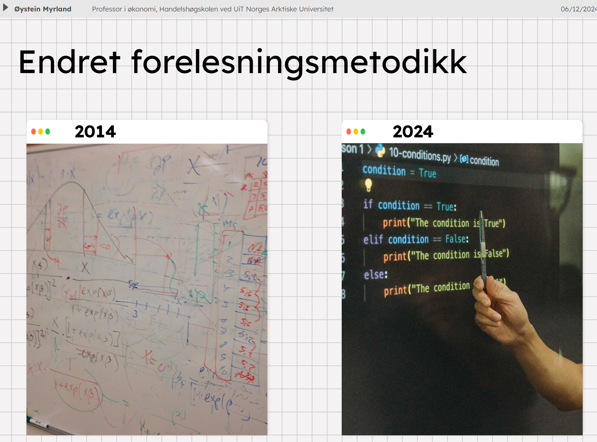
In the appendices, called “Sections” of this document, I provide examples of how my courses, teaching tools, and assessment methods have developed to reflect this philosophy. One of the milestones of this journey was the collective effort with my colleagues in the economics program to rebuild a classical economics education to create the Bachelor in Economics with Data Science—a program that integrates theoretical and practical tools for analyzing modern economic challenges (see Section 2). This innovative program, launched in 2021, won the faculty of Fisheries, Biology and Economics (BFE) “Utdanningsprisen” (Teaching Award) in 2022. The program emphasizes hands-on learning, equipping students with essential coding skills in R and Python (Van Rossum and Drake 2009) and providing them with a platform to apply economic theories to real-world data through diverse projects. It also reflects my ongoing commitment to advancing education, now contributing to the new Master program in Economics with Data Science, ensuring students gain both theoretical knowledge and practical expertise.
Appendicies/Sections
In addition to the main body of this document, which describes my core principles of teaching, I have included the following sections/appendices to highlight my teaching approach and educational development.
Section 1: Teaching Philosophy in Action - “BED-2056 Introduction to Data Science”
Section 2: Economics with Data Science - A New Educational Approach
Section 3: Introduction to Reproducible Research with “Bruttonasjonalprodukt - BNP”
Section 4: Online Coding Platform - “Jupyter at UiT”
Section 5: Online WISEflow Exam
Section 6: Automated Grade Explanation for All
Section 7: Partnering with Students for Continuous Improvement
Section 8: Letter of recommendation from department head
Core Principles of Teaching
As a university professor specializing in quantitative analysis like econometrics, statistics, data science, and finance, my teaching philosophy is guided by a commitment to cultivating statistical thinking1 and fostering an analytical mindset in students (Racine and Hyndman 2002). I believe in creating an educational environment where students are not just passive recipients of knowledge but active participants in their learning journey (Smith 1998). This involves teaching as an investigative process of problem-solving and decision-making (see Section 3).
Statistics, as both a methodology and a field of study, is deeply embedded in historical, philosophical, and political contexts. Traditionally linked to the administration and governance of the state, statistics initially encompassed broad descriptive narratives about the state’s condition. Over time, this evolved into the structured collection of numerical data to meet the growing demands of modern governance, societal debate, and academic inquiry. Recognizing this cultural and historical foundation enriches the learning process, allowing students to appreciate how statistical methods evolved to meet the needs of science, governance, and society. This historical perspective also emphasizes the dual nature of statistics: as a descriptive tool for summarizing reality and as a mathematical discipline for making inferences from data. These advances have been pivotal not only in academia but also in practical fields like economics, sociology, and even fisheries management (see Section 3).
Moreover, teaching statistics critically includes addressing its philosophical underpinnings. Statistics bridges the certainty of mathematics with the uncertainty of empirical observations. It equips students to navigate complex phenomena by identifying patterns and relationships while acknowledging inherent limitations. Highlighting these aspects encourages students to view statistics as a reflective, rather than purely technical, discipline.
Through cooperative and interactive learning approaches, I aim to empower students with the skills to interpret and critically evaluate statistical information. This involves fostering mathematical literacy and numeracy, ensuring that students can engage with statistical representations in the media and everyday life. By embedding these practices in teaching, I seek to cultivate informed students who can actively participate in data-driven decision-making processes (see Section 2 and Section 7).
Constructive Alignment in Teaching
Constructive alignment, as developed by Biggs (1996) and elaborated in Biggs and Tang (2011), provides the theoretical foundation for integrating learning theory with instructional design. This framework, building on constructivist learning principles (Cohen 1987), establishes that effective learning occurs when teaching methods, learning activities, and assessment practices work in harmony to support intended learning outcomes. The framework particularly emphasizes how students construct meaning through their engagement with carefully designed learning activities.
The SOLO (Structure of Observed Learning Outcomes) taxonomy, a key component of constructive alignment theory (Biggs and Tang 2011), has guided my course design, particularly in the progression of learning activities. For example, in my econometrics courses, students advance from understanding basic statistical concepts (unistructural) to analyzing complex economic relationships (relational), and finally to creating original analyses using multiple data sources. This progression aligns with Wang et al. (2013) findings on the effectiveness of structured learning progressions in higher education.
At its core, constructive alignment transforms traditional teacher-centered instruction into a learner-centered model. This transformation manifests in my teaching through carefully designed learning sequences where each element reinforces the others. For instance, in my WISEflow assessments (see Section 5), students demonstrate their understanding not through mere reproduction of knowledge, but through practical application of economic theories to real-world data analysis problems. This approach exemplifies what Biggs and Tang (2011) describe as “performances of understanding” - assessments that require students to actively demonstrate their grasp of concepts through meaningful application.
The implementation of constructive alignment in my teaching is particularly evident in my integration of coding tasks and hands-on data analysis (see Section 3). These activities are deliberately structured to align with both the theoretical foundations of economics and the practical skills demanded by the profession. Students progress through carefully sequenced learning activities that build upon each other, from basic coding exercises to complex economic analyses, ensuring that assessment tasks authentically reflect the learning objectives and professional competencies they are meant to develop.
This systematic alignment between learning objectives, teaching activities, and assessment methods has produced demonstrable improvements in student learning outcomes, particularly in their ability to apply theoretical concepts to practical problems. The success of this approach is reflected in both student performance and their readiness for professional challenges, supporting Biggs and Tang (2011)’s assertion that proper constructive alignment leads to deeper, more meaningful learning experiences.
Fostering Conceptual Understanding
My teaching approach prioritizes conceptual understanding over rote memorization. I focus on enabling students to understand the underlying principles of econometric and statistical methods, ensuring they grasp the “why” behind the techniques they use. This approach moves beyond procedural learning to a deeper comprehension of concepts (see Section 1).
Conceptual understanding in statistics involves equipping students with the ability to make decisions about data visualization, exploration, and analysis. As emphasized in statistical education literature, students must develop a strong grasp of core concepts like variability, bias, randomness, distribution, and inference. These foundational ideas provide a framework for using tools and procedures effectively. For example, understanding variability allows students to appreciate the inherent differences in data, while knowledge of randomness helps them recognize its role in drawing valid conclusions.
To foster this understanding, I emphasize an investigative approach to learning. Students are encouraged to think critically about how data is collected, explore the questions it seeks to answer, and examine its implications. For instance, I guide them to consider why certain methods are chosen, how data limitations might affect results, and what alternative interpretations may exist. By focusing on these higher-order questions, students learn to connect statistical methods with real-world applications (see Section 5).
In line with Dysthe (2001) emphasis on dialogic learning, my teaching philosophy recognizes the centrality of dialogue and interaction in fostering deep learning. Dysthe’s framework highlights how learning is co-constructed through meaningful exchanges among students, teachers, and the wider learning environment. By creating opportunities for collaborative problem-solving and peer discussions, I aim to transform the classroom into a dialogic space where diverse perspectives contribute to understanding (Brooman, Darwent, and Pimor 2015).
This approach aligns with my use of collaborative assignments, hands-on coding projects (see Section 3), and my emphasis on student engagement through mid-term feedback (see Section 7). I also supervise students on their term papers and strive to provide as much individual feedback as possible on assignments, ensuring personalized guidance in their learning journey. Encouraging students to reflect on their learning processes, share their insights, and challenge each other’s ideas not only deepens their understanding but also equips them with critical thinking and communication skills essential for professional success.
Another key element is the use of engaging examples and case studies that highlight the role of econometrics as an exploratory and decision-making tool. These examples illustrate that econometrics is not merely a set of disconnected formulas but a coherent process aimed at uncovering insights from data. For instance, analyzing real-world datasets can help students see how statistical models are built and validated, and how they inform decisions in various domains (see Section 2).
Integrating Real Data and Context
One of my primary goals is to bridge theoretical knowledge with practical application, following Brown, Collins, and Duguid (1989) situated learning framework, which emphasizes that knowledge is inseparable from its context of use. By integrating real-world data into coursework, students learn to appreciate the relevance of statistical tools in solving complex problems (Libman 2010; Herrington 2005). This approach creates what Brown, Collins, and Duguid (1989) describe as an “authentic context” for learning, preparing students to tackle real-world challenges effectively (see Section 2 and Section 3).
In my teaching, I often incorporate authentic datasets from official sources such as Statistics Norway (Statistisk Sentralbyrå, SSB), exemplifying Herrington’s principles of authentic learning environments (Herrington 2005). For example, I have used data on Gross Domestic Product (GDP) per capita from SSB to illustrate growth trends and economic concepts. Students are introduced to tools like APIs (Application Programming Interfaces) to extract data directly from online repositories, engaging in what Brown, Collins, and Duguid (1989) term “legitimate peripheral participation” in real economic analysis. This hands-on approach enables students to work with real data and enhances their technical skills in data extraction, cleaning, and visualization (see Section 3).
To further contextualize the data, I encourage students to examine the underlying economic theories and mathematical foundations. For instance, while analyzing GDP data, students explore concepts such as relative and percentage changes, and they learn to compute and interpret these metrics using logarithmic transformations. These activities reinforce the importance of critical thinking and the ability to connect quantitative analysis with theoretical frameworks (Carter et al. 2011), creating what Herrington terms “authentic activities” (Herrington 2005).
Visual representation of data plays a significant role in making the material accessible and engaging. Students create and refine graphical presentations of their findings, such as time-series plots of GDP growth rates. This practice not only improves their technical proficiency in tools like R and Python but also helps them communicate complex ideas effectively (see Section 2).
A very critical principle I emphasize is the use of reproducible code in data analysis (Ram 2013). By employing tools that allow for the automatic updating of data, charts, and analysis each time the code is rerun, students learn to create dynamic and adaptable workflows. This approach mirrors real-world practices and highlights the limitations of static “point-and-click” software or Excel-based analyses. Reproducible workflows not only ensure consistency and transparency but also enable students to adapt their analyses as new data becomes available, fostering a deeper understanding of the dynamic nature of economic and societal systems (see Section 3).
Emphasizing Multivariable Thinking
Economics, as a discipline, is deeply interconnected with societal structures and behaviors (Pühringer and Bäuerle 2019). When teaching multivariable thinking, I emphasize the importance of examining the big picture to understand how different components of society interact with the economy. This approach involves exploring how variables such as income levels, government policies, market structures, and global trends jointly influence economic outcomes and price formations.
For instance, students analyze datasets that involve multiple economic indicators, such as GDP, inflation rates, and unemployment levels, to uncover interdependencies. Through this process, they learn to construct and interpret models that reflect real-world economic complexities. By incorporating data visualization tools, students create multidimensional graphs that display relationships between variables, fostering a deeper understanding of how societal factors contribute to economic trends (see Section 1).
To further enhance multivariable thinking, I encourage students to engage in scenario analyses. For example, they may investigate how changes in taxation policies impact both consumer behavior and market prices. Such exercises help students recognize the dynamic nature of economic systems and the need for holistic perspectives when addressing policy questions or business challenges (see Section 2).
The ultimate goal is to cultivate a mindset where students appreciate the interconnectedness of societal and economic phenomena. This approach not only sharpens their analytical skills but also prepares them to contribute meaningfully to discussions on economic policy and societal development.
Active Learning and Collaboration
Active learning lies at the heart of my teaching philosophy, sparked by my own research with a colleague (Bertheussen and Myrland 2016). This approach resonates with (Laurillard 2012) Conversational Framework, which builds on social constructivist principles by emphasizing the importance of dialogue and iterative interaction in the learning process. The only way for students to truly master the practical and applied aspects of econometrics, statistics, and data science is through consistent, structured practice within their zone of proximal development (Vygotsky 1978).
Initially, my teaching approach was rooted in traditional “talk and chalk” methods. However, I observed that while these methods helped students understand theoretical concepts, many struggled to translate their understanding into practical skills. To address this gap, I adopted a more interactive approach, incorporating hands-on activities and collaborative assignments (Becker and Watts 1998; Henderson, Ryan, and Phillips 2019). These activities challenge students to think critically, solve problems, and collaborate effectively with their peers (see Section 3).
Each assignment is designed to mirror real-world scenarios, requiring students to apply theoretical concepts to data-driven problems. Following the principles of situated learning (Laurillard 2012), students analyze datasets to identify trends, create predictive models, or evaluate policy impacts. This approach not only solidifies their understanding of the material but also prepares them for the complexities of professional environments (see Section 2).
The importance of active learning is echoed in educational research, which highlights the benefits of experiential learning and student-centered approaches (Alderman, Towers, and Bannah 2012; Mandouit 2018). Fostering statistical literacy and thinking requires students to engage with real data in relevant contexts. By designing assignments that simulate scientific laboratories rather than traditional classrooms, I provide students with the tools to navigate the dynamic landscape of modern data analysis.
Collaboration, grounded in social constructivist learning theory, is another critical component of my teaching (Henderson, Ryan, and Phillips 2019). Group assignments encourage students to share diverse perspectives, hone their communication skills, and learn from one another through peer scaffolding. These experiences mirror professional settings, where teamwork is essential for success. By working together, students not only deepen their understanding but also build essential interpersonal skills that will serve them throughout their careers (see Section 2).
Leveraging Technology
Technology has been a cornerstone of my teaching philosophy, guided by the Technological Pedagogical Content Knowledge (TPACK) framework (Koehler and Mishra 2009). This framework emphasizes the complex interplay between technological knowledge, pedagogical approaches, and subject matter expertise in effective teaching. Through my advocacy for open-source software like R and Python, students gain access to powerful, cost-free platforms that eliminate the barriers of expensive licenses (see Section 4). Following Hoyt and McGoldrick (2012) recommendations for economics education, these open-source tools ensure students can continue using these technologies beyond their academic journey, applying their skills in professional environments without the constraints of proprietary software.
In 2017, I began using WISEflow, a SaaS2 solution for exams (see Section 5). Aligned with TPACK principles of integrating technology with pedagogical goals (Koehler and Mishra 2009), this platform revolutionized how I assess students by enabling practical and applied testing in econometrics (Chance 2002). Before adopting WISEflow, exams primarily focused on theoretical understanding, which often led students to downplay the practical components of the course. With WISEflow, I can test students’ ability to implement statistical methods, analyze data, and interpret results, ensuring a more comprehensive evaluation of their skills.
Since the introduction of Large Language Models (LLMs) in November 2022, I have integrated chatbots and tools such as GitHub Copilot into my teaching practices, exemplifying what Hoyt and McGoldrick (2012) describe as adaptive technology integration in economics education. Historically, coding has been a challenging skill for students to develop, especially alongside the demands of mastering theoretical and mathematical concepts. The integration of LLM-powered tools into coding environments has significantly reduced barriers to learning these skills, while maintaining the careful balance between technological assistance and pedagogical objectives that TPACK emphasizes (Koehler and Mishra 2009).
However, the main learning challenge has shifted towards teaching students how to critically evaluate and validate the suggestions provided by these tools. I emphasize the importance of reviewing and verifying the chatbot’s outputs to ensure accuracy and alignment with the problem at hand. By fostering critical thinking and coding literacy, I prepare students to use these tools responsibly and effectively in professional contexts.
The integration of LLMs, alongside other technological tools, enhances the learning process and equips students with the skills needed for the rapidly evolving digital landscape. This commitment to leveraging technology reflects my dedication to preparing students for the challenges and opportunities of the future, while maintaining the careful balance between technological innovation and pedagogical effectiveness that the TPACK framework advocates (Koehler and Mishra 2009).
Ethical Considerations
In an era of data-driven decision-making, the ethical implications of data usage and analysis cannot be overstated. As a teacher, I emphasize the critical importance of ethical considerations in all aspects of statistical practice. This includes recognizing biases in data collection, ensuring transparency in analysis, and adhering to principles of fairness and accountability when interpreting results.
One key area I focus on is the potential for misrepresentation or misuse of data. Students learn to critically evaluate the quality and source of their data, considering questions such as: Who collected this data? What assumptions underlie its collection? What potential biases might influence its interpretation? This reflective approach ensures that students develop a conscientious mindset towards the power and responsibility that come with handling data.
Another significant aspect is teaching students about privacy and confidentiality. With growing concerns over data breaches and misuse, students explore frameworks for ensuring that personal or sensitive information is safeguarded during analysis. Through case studies and discussions, I highlight real-world examples of ethical dilemmas and encourage students to propose solutions grounded in established ethical guidelines.
As Scheaffer (1998) emphasized, statistical education must include the awareness of the societal impact of statistical methods. This means teaching students not only to be proficient analysts but also to act as ethical stewards of the data they handle.
Finally, I incorporate discussions on the ethical implications of algorithmic decision-making, especially in the context of machine learning and artificial intelligence. Students are introduced to the concepts of algorithmic fairness and the risks of perpetuating biases through automated systems. By understanding these challenges, students are better prepared to contribute to a field that increasingly influences societal decisions.
Assessment as a Tool for Learning
Assessments in my courses follow Black and Wiliam (1998) formative assessment framework, designed not only to evaluate student performance but also to enhance learning through continuous feedback loops (Hubbard 1997). By integrating coding as an essential component, I aim to bridge theoretical mathematics with algorithmic thinking, creating what Black and Wiliam (1998) term “moment of learning” where assessment directly informs instruction. Students demonstrate their understanding of econometric and statistical concepts while implementing these concepts programmatically using tools like Python and R (see Section 5).
For example, I incorporate exercises that use R or Python to solve mathematical problems, optimize functions, and model complex systems (Sierra 2020; Ihantola et al. 2015). This approach helps students transition from abstract mathematical reasoning to tangible, applied problem-solving skills, with automated feedback systems providing immediate guidance on their progress. Additionally, version control tools such as Git and platforms like GitHub are integral to my courses (Beckman et al. 2021). Students learn to manage their code repositories, collaborate on projects, and integrate their work with our Learning Management System (LMS), Canvas, creating what Black and Wiliam (1998) describe as a “formative assessment practice.”
The use of SaaS platforms, like WISEflow, further enhances the assessment process by enabling what Ihantola et al. (2015) term “continuous process improvement in a learning context.” Practical exams conducted on this platform allow me to test students’ applied skills in econometrics and data analysis (Pfannkuch and Wild (2000)). Beyond grading, WISEflow enables me to provide detailed feedback reports to students, implementing Black and Wiliam (1998) principles of effective feedback by highlighting specific strengths and areas for improvement. This iterative feedback mechanism helps students refine their skills and deepen their understanding of the material.
The figure below demonstrates the effectiveness of this assessment approach, showing the aggregate percentile for grades C and B in SOK-3020 Econometrics for business students. These students do not have the same mathematical background as economics program students, hence it is considered a difficult topic. The positive trend in aggregate grades after 2017 aligns with Ihantola et al. (2015)’s findings on the benefits of integrated programming assessment.
By integrating coding, algorithmic thinking, and modern technological tools into assessments, I ensure that students gain a comprehensive, practical, and forward-looking education (Combs et al. 2008). I also use these tools to automatically generate individual feedback on student performance (see Section 6), implementing what Black and Wiliam (1998) describe as “assessment for learning” rather than merely assessment of learning. These strategies not only measure student performance but also foster a continuous learning process that equips them with the skills to excel in academia and industry.
Plans Ahead
Looking forward, the master program in Economics with Data Science is incorporating cutting-edge machine learning techniques that extend beyond the traditional methodological toolbox typically available to economists (Varian 2014). These advancements are essential as we aim to equip students with the skills required to analyze complex and unstructured data, including text, which has become increasingly relevant in both research and industry (Bickley, Chan, and Torgler 2022).
My own research now includes using text as data (Gentzkow, Kelly, and Taddy 2019), leveraging advancements such as Large Language Models (LLMs). These tools have transformed how we analyze and interpret textual information, making them a necessary component of our teaching. By integrating LLMs into the curriculum, we provide students with the opportunity to work with text data in ways that were previously unattainable. For instance, students learn how to preprocess, analyze, and extract meaningful insights from text, ensuring they are well-prepared to navigate a data-rich, text-driven world.
In addition to teaching text analysis, we are also exploring how LLMs can support students in solving coding tasks. These tools have the potential to reduce the barriers students often face when learning to program, offering real-time assistance in debugging and refining their code. As part of this initiative, we are investigating ways to seamlessly incorporate LLMs into the teaching environment, ensuring they are used effectively as educational aids rather than shortcuts.
Beyond the Economics with Data Science programs, coding skills are now being integrated into other programs at the Business School. This expansion reflects a broader shift toward embedding computational literacy across disciplines. I am committed to contributing to this development, ensuring that all students have access to the tools and training necessary for data-driven decision-making.
Furthermore, many researchers and students at the Business School currently focus on traditional qualitative analysis. As the use of text analytics becomes more prevalent, there will be a growing need to support these individuals in transitioning to approaches that treat text as data suitable for computational analysis. By providing targeted training and resources, we can help staff and students adopt these methodologies, enriching their research capabilities and preparing them for the future of qualitative and mixed-methods research.
These plans represent a commitment to staying at the forefront of educational and technological innovation, ensuring that our students and staff are well-equipped to meet the challenges and opportunities of a rapidly evolving academic and professional landscape.
1 Section 1: Teaching Philosophy in Action - “BED-2056 Introduction to Data Science”
The BED-2056 course, which ran from 2018 to 2021, exemplified my teaching philosophy by introducing economics students to the interdisciplinary field of data science (Hicks and Irizarry 2018). Designed to foster skills at the intersection of statistics, data visualization, programming, and applied problem-solving, the course served as an inspiration for development of the “Samfunnsøkonomi med datavitenskap - bachelor” program, underscoring its foundational role in advancing economics education.
A core feature of BED-2056 was its integration of theoretical knowledge with practical application (Hardin et al. 2015). Students used tools like R and RStudio to clean, visualize, and analyze data, tackling real-world tasks such as working with APIs, web scraping, and time-series analysis. This hands-on approach ensured that students moved beyond procedural learning, developing a deeper understanding of concepts such as variability, randomness, and distribution (Gilboa, Postlewaite, and Schmeidler 2008). Activities like creating reproducible R Markdown documents and using Git-based workflows emphasized investigative learning and practical competence.
Collaboration and critical thinking were central to the course. Students worked on group data science projects, mirroring real-world environments where teamwork and problem-solving are essential. By incorporating open-source tools, BED-2056 eliminated financial barriers while equipping students with practical, sustainable skills in data extraction, cleaning, and visualization.
The course also leveraged platforms like datacamp for interactive coding exercises, providing instant feedback to reinforce programming skills. A strong focus on reproducibility and ethical data practices was maintained throughout, with assignments and projects submitted via GitHub to instill a conscientious approach to data handling.
Assessments were designed to connect theoretical concepts with algorithmic thinking. Coding exercises and project presentations ensured that students demonstrated their ability to translate abstract ideas into practical applications. This approach highlighted the course’s commitment to fostering a comprehensive, applied understanding of data science.
To me BED-2056 stands as a successful implementation of my teaching philosophy, bridging theoretical principles with practical education to prepare students for the complexities of modern, data-driven economics and finance. Its integration into the new bachelor program and the positive feedback from students reflect its impact in shaping innovative, interdisciplinary learning at UiT.
The BED-2056 course not only embodied my teaching philosophy but also served as a catalyst for a broader transformation within the economics program at UiT. When the course was first introduced in 2018, it attracted a modest enrollment of 16 students. However, its innovative approach, blending data science with economic analysis, resonated strongly with students, and by 2020, enrollment had more than doubled to 36 students. This growth highlighted the increasing demand for a curriculum that integrates programming, data analysis, and applied problem-solving with traditional economics education.
The success of BED-2056 sparked conversations among faculty and stakeholders about the evolving needs of economics students in a data-driven world. Recognizing the course’s impact, we began reimagining the entire economics program, ultimately leading to the launch of the “Economics with Data Science” bachelor’s program in 2021. This new program built upon the foundations established in BED-2056, emphasizing programming skills, real-world data analysis, and interdisciplinary learning throughout the curriculum.
The transition represents a significant evolution in economics education at UiT, reflecting the growing importance of equipping students with the tools and mindset to navigate the complexities of modern economic and societal challenges. The transformation of the program, inspired by the success of BED-2056, ensures that students are prepared to meet the demands of a rapidly changing job market while contributing meaningfully to research and policy-making in an increasingly data-centric world.
2 Section 2: Economics with Data Science - A New Educational Approach
The Bachelor and Master programs in Economics with Data Science at the Business School, UiT, represent a significant evolution in economics education. Initiated in 2021 for the bachelor level and expanded to the master level in 2024, these programs integrate advanced economic analysis with data science, addressing the growing need for interdisciplinary expertise in today’s data-driven world (Engel 2017). This innovative approach emerged from a recognition that traditional economics education needed to evolve to meet contemporary challenges and the demands of the employment market.
The development process involved collaboration with diverse stakeholders, including industry representatives, research institutions, alumni, current students, and professionals. This collaborative effort identified key challenges in traditional economics education, particularly the disconnect between theoretical knowledge and practical application. Stakeholder feedback emphasized the importance of practical skills, interdisciplinary knowledge, and the ability to communicate findings effectively.
A distinctive feature of these programs is the integration of programming and data analysis into every course, setting them apart from traditional economics curricula. Recognizing that many economics students find programming challenging, the curriculum embeds coding as a continuous element rather than isolating it to specific courses. Students engage with programming languages like Python and R throughout their studies, applying these tools to solve real economic problems and analyze actual economic data.
The bachelor’s program provides a strong foundation in both economics and data science. Students begin their journey with foundational courses that integrate economic concepts with coding, ensuring early exposure to essential skills. As they progress, advanced courses combine economic theory with practical analysis, encouraging students to apply their knowledge to contemporary societal challenges, as advocated by Sekwena (2023). The program ends with a bachelor thesis, allowing students to synthesize their skills and conduct independent research using modern data science techniques.
Building on this foundation, the master’s program offers advanced training in economic analysis and data science. The curriculum is designed around themed semesters, progressively covering static linear models in economics, time series and dynamic economic models, and causal analysis of individual and group behavior. The program concludes with a research-based master thesis, presented in the format of a scholarly article, reflecting rigorous academic standards.
A key innovation in these programs is the development of a digital portfolio that serves as an “academic CV.” Students showcase their analyses, coding projects, and findings, shifting the emphasis from traditional grades to demonstrable competence. The programs also utilize a custom-developed Content Management System (CMS) that standardizes course presentation, ensuring easy access to content and supporting modern, technology-enhanced learning while maintaining consistency across courses (see Section 3 and the github link).
The success of these programs is evident in the significant growth in student enrollment, which more than doubled the numer of applicants to the bachelor programme when it was initiated. The innovative design and implementation earned recognition from our faculty, winning the 2022 “Utdanningsprisen” (educational award). Early indicators suggest that graduates are well-prepared for careers in both private and public sectors. The combination of economic theory, practical programming skills, and data analysis capabilities makes them particularly attractive to employers seeking analysts capable of handling complex economic and data challenges.
By integrating programming throughout the curriculum and emphasizing applied analysis, the Economics with Data Science programs equip students to thrive in a rapidly evolving economic landscape. This pioneering approach ensures graduates are not only adept at using data science tools but also capable of addressing complex economic challenges with creativity and confidence.
3 Section 3: Introduction to Reproducible Research with “Bruttonasjonalprodukt - BNP”
In the first semester of the new bachelor’s program in Economics with Data Science, students are introduced to key concepts of economic analysis and data visualization through a practical case study on Gross Domestic Product (GDP) per capita, or “Bruttonasjonalprodukt” (BNP). This example, implemented in SOK-1004 Economic Topics and Programming in 2021, integrates economic theory, mathematics, and reproducible research practices using R and Quarto (formerly R Markdown). The whole course plan and student resources is still available on github here.
Using GDP data from Statistics Norway (Statistisk Sentralbyrå, SSB), students explore GDP trends and learn how to source, analyze, and visualize real-world data. A key component of the exercise is introducing reproducible code, where all analysis and visualizations can be automatically updated when the data changes. The rendered web page can be found on github here.
The BNP case connects economic theory and mathematical principles with hands-on data visualization. Students analyze GDP as a measure of economic performance, applying mathematical concepts like percentage changes and logarithmic transformations. They use R to create dynamic visualizations, fostering both conceptual understanding and technical skills.
Through coding exercises, students generate plots to depict GDP trends over time and calculate growth rates. This hands-on approach demonstrates the relevance of mathematical and statistical concepts in economic decision-making and policy analysis.
Reproducibility is seamlessly embedded into this exercise. All analyses are performed using R and Quarto, ensuring that:
- Dynamic Analysis: Rerunning the code automatically updates all tables and figures when new data is available.
- Transparency: Every step, from raw data collection to final visualization, is documented and replicable.
- Real-World Relevance: Students learn to work with APIs to source live data from SSB, gaining practical experience in modern data workflows.
To highlight reproducibility, students use Quarto to create both the source markdown document (.qmd) and a rendered HTML output. Below is an example of the markdown code:
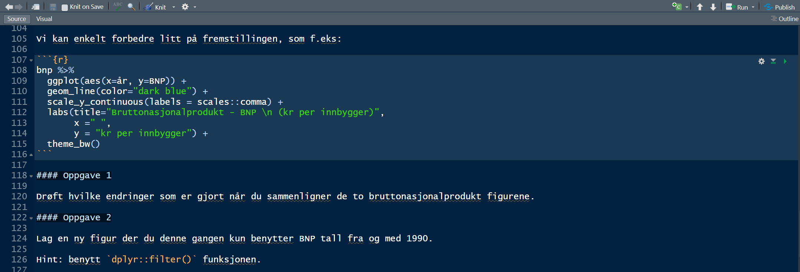
The rendered output is shown below:
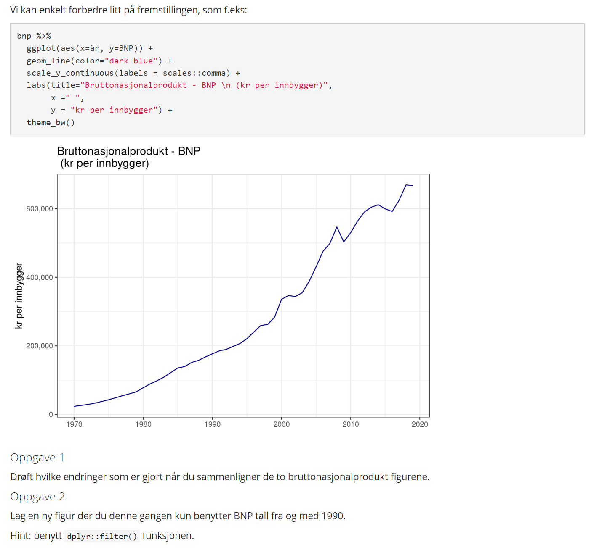
How it works: Students write code and narrative text in a .qmd file. Quarto processes the .qmd file to generate a styled HTML page or other formats (e.g., PDF or Word). Any updates to the code or data automatically refresh the rendered output, ensuring consistency across the document.
This workflow introduces students to reproducible research principles, preparing them for advanced projects and professional environments.
Students engage with tasks such as calculating GDP growth rates, creating visualizations, and analyzing trends over time. A guided exercise demonstrates the advantages of using reproducible methods, showing how charts and analyses adjust automatically when rerun. By the end of the exercise, students: understand GDP as an economic indicator, apply mathematical concepts to analyze growth, master basic R coding for data visualization, and appreciate the importance of reproducibility in research and analysis. The Bruttonasjonalprodukt - BNP case serves as a foundation for students’ academic journey, equipping them with the skills and mindset needed for data-intensive fields in economics and beyond.
4 Section 4: Online Coding Platform - “Jupyter at UiT”
Introducing first-year students to coding can be a significant challenge, particularly when they must navigate the complexities of installing open-source software like R or Python alongside numerous dependencies. Recognizing this barrier, I took the initiative to collaborate with UiT’s IT department to create a common coding service accessible to all students and staff. This effort was spearheaded with the invaluable support of Roy Dragseth, whose expertise and dedication made the project possible.
The journey began with the creation of rstudio.uit.no, a web-based platform exclusively for the R programming language. While effective, its scope was limited to R users. Roy subsequently developed jupyter.uit.no, an expanded platform encompassing R, Python, SageMath, and xeus-sql. This evolution has transformed the coding learning environment at UiT, offering a robust, cloud-based coding solution for diverse needs across disciplines.
Jupyter is an interactive computing environment that supports multiple programming languages through a single interface (Granger and Pérez 2021). Students and staff can log in seamlessly using their UiT Feide credentials and access a virtual workspace from any web browser. The platform eliminates the need for local installations, ensuring users can start coding immediately without worrying about software compatibility or updates. This accessibility makes it an ideal tool for students embarking on their coding journey, allowing them to focus on learning and experimentation rather than technical setup.
The simplicity and efficiency of Jupyter have made it an indispensable resource. Students can write, execute, and share their code within a highly intuitive interface. For example, in the case of learning R, they can create and run a basic “Hello World!” script directly in their browser, experiencing the immediate satisfaction of seeing their code in action (Al-Gahmi, Zhang, and Valle 2022).
The launch window of Jupyter greets users with an organized interface, offering options to start new notebooks in various programming languages or open existing projects. It provides an overview of available resources, ensuring users can quickly navigate to their workspace. The coding interface itself is clean and functional, presenting a notebook-style environment where users can write text, execute code, and visualize results seamlessly in one document.
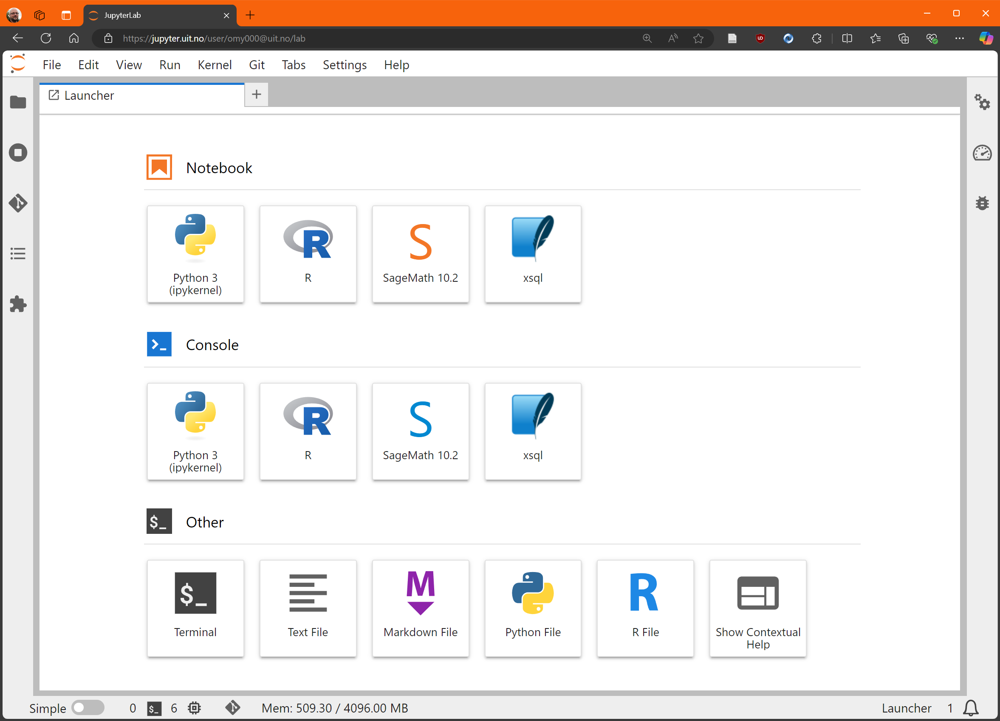
The Jupyter launch window provides users with options to create new notebooks in multiple programming languages, open existing projects, or explore uploaded files. The clean and organized interface makes it easy for students and staff to navigate and start their coding journey effortlessly.
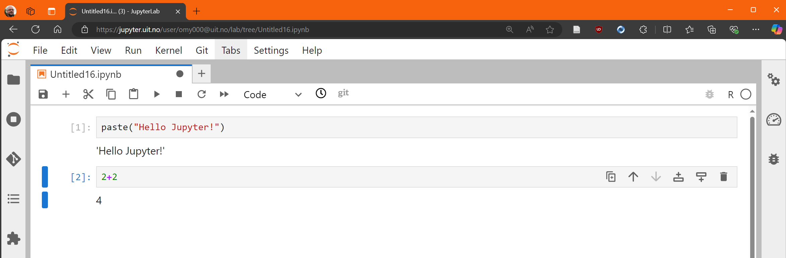
A simple “Hello World!” example written and executed in Jupyter using the R kernel. This demonstrates how first-year students can begin coding immediately without local installations, focusing on understanding programming concepts rather than troubleshooting software setup.
This platform not only lowers the barrier to entry for coding but also fosters a collaborative learning environment. With reproducibility and accessibility as its core strengths, Jupyter is now an integral part of UiT’s commitment to modernizing education and equipping students with essential skills for data-driven disciplines. The availability of such a versatile and powerful tool reflects UiT’s dedication3 to providing high-quality, inclusive education in the digital age.
5 Section 5: Online WISEflow Exam
The introduction of the SaaS client WISEflow at UiT in 2017 opened new possibilities for assessing students in innovative ways. Recognizing its potential, I adapted my courses to incorporate practical coding tasks as part of the exam process. This approach not only evaluates theoretical understanding but also ensures that students gain recognition for their coding skills—an essential aspect of modern quantitative education.
In the course SOK-3020 Econometrics, the exam structure exemplifies this integration. It consists of two parts: a closed session with traditional theoretical questions and an open-book session where students have access to coding tools and online resources. During the open session, students work on practical coding exercises, applying econometric and statistical techniques to real-world data. This format ensures that their ability to translate theoretical concepts into actionable analysis is thoroughly assessed.
For example, students may be tasked with writing and executing R code to estimate a statistical model and then interpreting the output. WISEflow provides a user-friendly environment where students can paste their R code directly into the submission interface, ensuring their work is easily reviewed and assessed. Additionally, interactive elements like a “drag and drop” interface are used for tasks such as interpreting model estimates, enabling students to demonstrate their understanding in a clear and structured way.
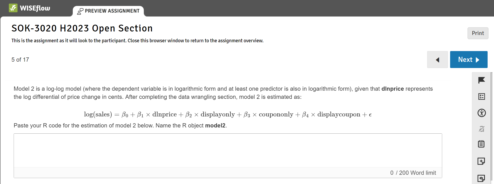
WISEflow’s interface for submitting R code during the open-book exam. Students paste their code here for evaluation, demonstrating their ability to implement econometric and statistical techniques programmatically.
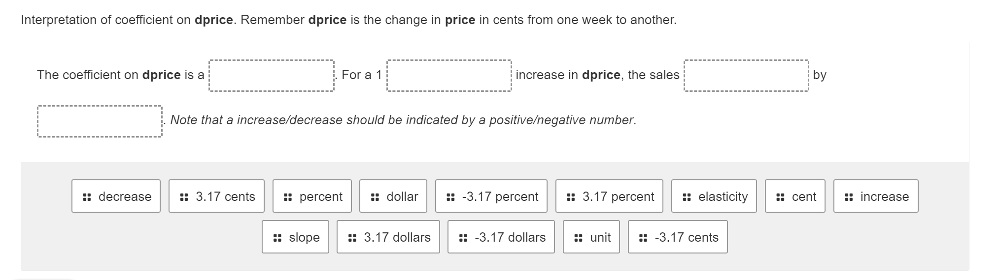
An example of WISEflow’s drag-and-drop interface, where students interpret estimated models by matching outputs to corresponding explanations. This feature allows for an intuitive and interactive assessment of their analytical understanding.
This approach bridges the gap between theoretical knowledge and practical application, fostering a comprehensive learning experience. Students not only master statistical methods but also develop the critical skill of effectively communicating their findings—both essential for professional success in data-driven disciplines.
6 Section 6: Automated Grade Explanation for All
Following the implementation of the “Online WISEflow Exam” in Section 5, I leveraged the platform’s capabilities to streamline the grading process and provide comprehensive feedback to students. WISEflow allows for automated point allocation for specific questions, which I augment with my own comments on the coding tasks. After the exam, I download a .csv file containing all candidate responses and scores, which I process programmatically to generate individual reports.
Using Markdown in Quarto, I create a reproducible workflow that integrates my comments with the students’ performance data. The grading process is automated to cycle through all candidate numbers, embedding personalized feedback into a standardized report template. Each report is rendered as a PDF, providing a “karakterbegrunnelse” (grade explanation) tailored to the student’s performance (Edwards and Pérez-Quiñones 2007). The reports are then uploaded back into each student’s exam on WISEflow, ensuring transparency and consistency in grading.
This workflow mirrors the principles of reproducible research that I emphasize in teaching, as demonstrated in Section 3. By automating the grading process, I ensure that every student receives clear, detailed feedback on their performance while maintaining high standards of fairness and efficiency.
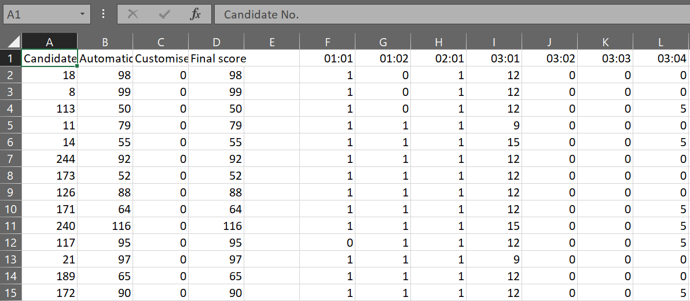 The downloaded .csv file from WISEflow contains candidate numbers, scores, and responses. This file is processed programmatically to generate individual feedback reports.
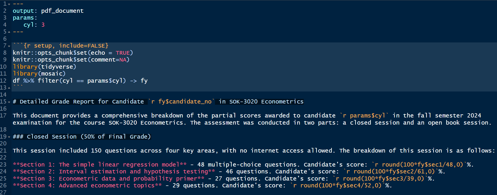 The Markdown code in RStudio used to generate personalized PDF reports for each student. This workflow ensures reproducibility and efficiency in the grading process.
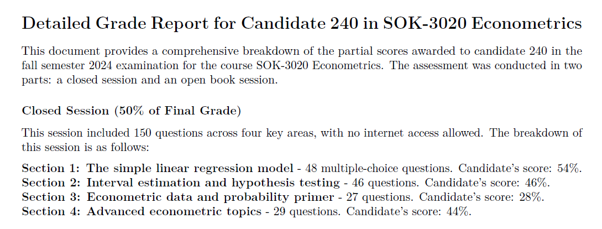
An example of a final PDF report generated for a specific candidate number, detailing their performance and feedback on the exam.
7 Section 7: Partnering with Students for Continuous Improvement
A key aspect of my teaching philosophy is fostering a collaborative learning environment where students actively contribute to the improvement of courses and programs. For many years, I have conducted mid-term evaluations in my classes, using student feedback to identify areas for enhancement (McCuddy, Pinar, and Gingerich 2008). This practice has been further strengthened with the introduction of the new bachelor’s program, where we hold regular meetings with student representatives (Brooman, Darwent, and Pimor 2015). These discussions address both the content of the curriculum and practical concerns, such as the timing of assignments and final exams. The active involvement of students ensures that the program evolves in response to their needs, making them valuable partners in shaping their education.
One significant outcome of this feedback process is the development of detailed class notes and handouts that clarify challenging aspects of the curriculum. For example, in the advanced course SOK-3008 Models for Market Analysis, I created a handout on panel data analysis to guide students through this complex topic. These materials not only address specific student concerns but also serve as resource that enhance their understanding and engagement with the subject matter.
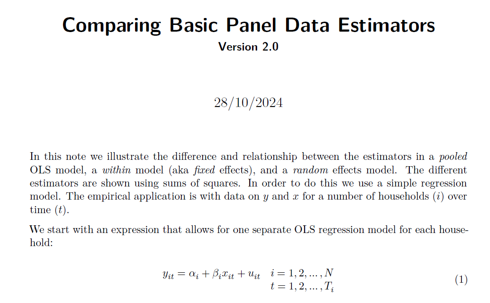
A sample handout on panel data analysis for the advanced course SOK-3008. This material was developed in response to student feedback to clarify key concepts and methods in the curriculum.
I would like to end this documentation of my educational competence with a snippet from an e-mail I got in January this year from a student in the Econometrics class.
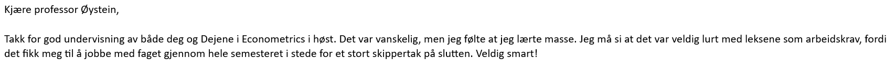 I have to admit that this type of feedback is rare, but highly appreciated!
8 Section 8: Letter of Recommendation from Department Head
Not available online.
References
Alderman, Lyn, Stephen Towers, and Sylvia Bannah. 2012. “Student Feedback Systems in Higher Education: A Focused Literature Review and Environmental Scan.” Quality in Higher Education 18 (3): 261–80.
Al-Gahmi, Abdulmalek, Yong Zhang, and Hugo Valle. 2022. “Jupyter in the Classroom: An Experience Report.” In Proceedings of the 53rd ACM Technical Symposium on Computer Science Education-Volume 1, 425–31.
Becker, William, and Michael Watts. 1998. Teaching Economics to Undergraduates. Edward Elgar Publishing.
Beckman, Matthew D, Mine Çetinkaya-Rundel, Nicholas J Horton, Colin W Rundel, Adam J Sullivan, and Maria Tackett. 2021. “Implementing Version Control with Git and GitHub as a Learning Objective in Statistics and Data Science Courses.” Journal of Statistics and Data Science Education 29 (sup1): S132–44.
Bertheussen, Bernt Arne, and Øystein Myrland. 2016. “Relation Between Academic Performance and Students’ Engagement in Digital Learning Activities.” Journal of Education for Business 91 (3): 125–31.
Bickley, Steve J, Ho Fai Chan, and Benno Torgler. 2022. “Artificial Intelligence in the Field of Economics.” Scientometrics 127 (4): 2055–84.
Biggs, John. 1996. “Enhancing Teaching Through Constructive Alignment.” Higher Education 32 (3): 347–64.
Biggs, John, and Catherine Tang. 2011. Teaching for Quality Learning at University. 4th ed. Maidenhead: McGraw-Hill Education.
Black, Paul, and Dylan Wiliam. 1998. “Assessment and Classroom Learning.” Assessment in Education: Principles, Policy & Practice 5 (1): 7–74.
Brooman, Simon, Sue Darwent, and A Pimor. 2015. “The Student Voice in Higher Education Curriculum Design: Is There Value in Listening?” Innovations in Education and Teaching International 52 (6): 663–74.
Brown, John Seely, Allan Collins, and Paul Duguid. 1989. “Situated Cognition and the Culture of Learning.” 1989 18 (1): 32–42.
Byron, RP. 1987. “SHAZAM: A Review.” Journal of Applied Econometrics 2 (1): 79–82.
Carter, Jackie, Susan Noble, Andrew Russell, and Eric Swanson. 2011. “Developing Statistical Literacy Using Real-World Data: Investigating Socioeconomic Secondary Data Resources Used in Research and Teaching.” International Journal of Research & Method in Education 34 (3): 223–40.
Chance, Beth L. 2002. “Components of Statistical Thinking and Implications for Instruction and Assessment.” Journal of Statistics Education 10 (3). https://doi.org/10.1080/10691898.2002.11910677.
Cohen, S Alan. 1987. “Instructional Alignment: Searching for a Magic Bullet.” Educational Researcher 16 (8): 16–20.
Combs, Kathryn L, Sharon K Gibson, Julie M Hays, Jane Saly, and John T Wendt. 2008. “Enhancing Curriculum and Delivery: Linking Assessment to Learning Objectives.” Assessment & Evaluation in Higher Education 33 (1): 87–102.
Dysthe, Olga. 2001. Dialog, Samspel Og læring. Abstrakt.
Edwards, Stephen H, and Manuel A Pérez-Quiñones. 2007. “Experiences Using Test-Driven Development with an Automated Grader.” Journal of Computing Sciences in Colleges 22 (3): 44–50.
Engel, Joachim. 2017. “Statistical Literacy for Active Citizenship: A Call for Data Science Education.” Statistics Education Research Journal 16 (1): 44–49.
Gentzkow, Matthew, Bryan Kelly, and Matt Taddy. 2019. “Text as Data.” Journal of Economic Literature 57 (3): 535–74.
Gilboa, Itzhak, Andrew W Postlewaite, and David Schmeidler. 2008. “Probability and Uncertainty in Economic Modeling.” Journal of Economic Perspectives 22 (3): 173–88.
Granger, Brian E, and Fernando Pérez. 2021. “Jupyter: Thinking and Storytelling with Code and Data.” Computing in Science & Engineering 23 (2): 7–14.
Gutierrez, Roberto G. 2010. “Stata.” Wiley Interdisciplinary Reviews: Computational Statistics 2 (6): 728–33.
Hardin, Johanna, Roger Hoerl, Nicholas J Horton, Deborah Nolan, Ben Baumer, Olaf Hall-Holt, Paul Murrell, et al. 2015. “Data Science in Statistics Curricula: Preparing Students to ‘Think with Data’.” The American Statistician 69 (4): 343–53.
Henderson, Michael, Tracii Ryan, and Michael Phillips. 2019. “The Challenges of Feedback in Higher Education.” Assessment & Evaluation in Higher Education.
Herrington, Jan. 2005. Authentic Learning Environments in Higher Education. IGI Global.
Hicks, Stephanie C, and Rafael A Irizarry. 2018. “A Guide to Teaching Data Science.” The American Statistician 72 (4): 382–91.
Hilbe, Joseph M. 2003. “A Review of Current SPSS Products: SPSS 12, Sigmaplot 8.02, SigmaStat 3.0, Part 1.” The American Statistician 57 (4): 310–15.
———. 2004. “A Review of SPSS 12.01, Part 2.” The American Statistician 58 (2): 168–71.
———. 2005. “A Review of SPSS, Part 3: Version 13.0.” The American Statistician 59 (2): 185–86.
Hoyt, Gail Mitchell, and KimMarie McGoldrick. 2012. International Handbook on Teaching and Learning Economics. Edward Elgar Publishing.
Hubbard, Ruth. 1997. “Assessment and the Process of Learning Statistics.” Journal of Statistics Education 5 (1).
Ihantola, Petri, Arto Vihavainen, Alireza Ahadi, Matthew Butler, Jürgen Börstler, Stephen H Edwards, Essi Isohanni, et al. 2015. “Educational Data Mining and Learning Analytics in Programming: Literature Review and Case Studies.” Proceedings of the 2015 ITiCSE on Working Group Reports, 41–63.
Kaplan, Daniel. 2018. “Teaching Stats for Data Science.” The American Statistician 72 (1): 89–96. http://www.jstor.org/stable/45118533.
Koehler, Matthew, and Punya Mishra. 2009. “What Is Technological Pedagogical Content Knowledge (TPACK)?” Contemporary Issues in Technology and Teacher Education 9 (1): 60–70.
Laurillard, Diana. 2012. Teaching as a Design Science: Building Pedagogical Patterns for Learning and Technology. 1st ed. United Kingdom: Routledge.
Libman, Zipora. 2010. “Integrating Real-Life Data Analysis in Teaching Descriptive Statistics: A Constructivist Approach.” Journal of Statistics Education 18 (1).
Mandouit, Luke. 2018. “Using Student Feedback to Improve Teaching.” Educational Action Research 26 (5): 755–69.
McCuddy, Michael K, Musa Pinar, and Elizabeth FR Gingerich. 2008. “Using Student Feedback in Designing Student-Focused Curricula.” International Journal of Educational Management 22 (7): 611–37.
Pfannkuch, Maxine, and Chris J Wild. 2000. “Statistical Thinking an Statistical Practice: Themes Gleaned from Professional Statisticians.” Statistical Science 15 (2): 132–52.
Pühringer, Stephan, and Lukas Bäuerle. 2019. “What Economics Education Is Missing: The Real World.” International Journal of Social Economics 46 (8): 977–91.
R Core Team. 2024. R: A Language and Environment for Statistical Computing. Vienna, Austria: R Foundation for Statistical Computing. https://www.R-project.org/.
Racine, Jeff, and Rob Hyndman. 2002. “Using r to Teach Econometrics.” Journal of Applied Econometrics. 17 (2): 175–89.
Ram, Karthik. 2013. “Git Can Facilitate Greater Reproducibility and Increased Transparency in Science.” Source Code for Biology and Medicine 8: 1–8.
Scheaffer, Richard L. 1998. “Statistics Education – Bridging the Gaps Among School, College and the Workplace.” In Proceedings of the Fifth International Conference on Teaching Statistics (ICOTS5). The Netherlands: International Statistical Institute.
Sekwena, Gailele L. 2023. “Active Learning Pedagogy for Enriching Economics Students’ Higher Order Thinking Skills.” International Journal of Learning, Teaching and Educational Research 22 (3): 241–55.
Sierra, Javier. 2020. “The Potential of Simulations for Developing Multiple Learning Outcomes: The Student Perspective.” The International Journal of Management Education 18 (1): 100361.
Smith, Gary. 1998. “Learning Statistics by Doing Statistics.” Journal of Statistics Education 6 (3).
Snee, Ronald D. 1999. “Discussion: Development and Use of Statistical Thinking: A New Era.” International Statistical Review/Revue Internationale de Statistique, 255–58.
Van Rossum, Guido, and Fred L. Drake. 2009. Python 3 Reference Manual. Scotts Valley, CA: CreateSpace.
Varian, Hal R. 2014. “Big Data: New Tricks for Econometrics.” Journal of Economic Perspectives 28 (2): 3–28.
Vygotsky, Lev S. 1978. Mind in Society: The Development of Higher Psychological Processes. Vol. 86. Harvard university press.
Wang, Xiaoyan, Yelin Su, Stephen Cheung, Eva Wong, and Theresa Kwong. 2013. “An Exploration of Biggs’ Constructive Alignment in Course Design and Its Impact on Students’ Learning Approaches.” Assessment & Evaluation in Higher Education 38 (4): 477–91.
Footnotes
SaaS: Software as a Service.↩︎
The IT department continues the development of this platform, and during the fall of 2025, the Julia language and GPU-based PyTorch estimation for machine learning will be included.↩︎